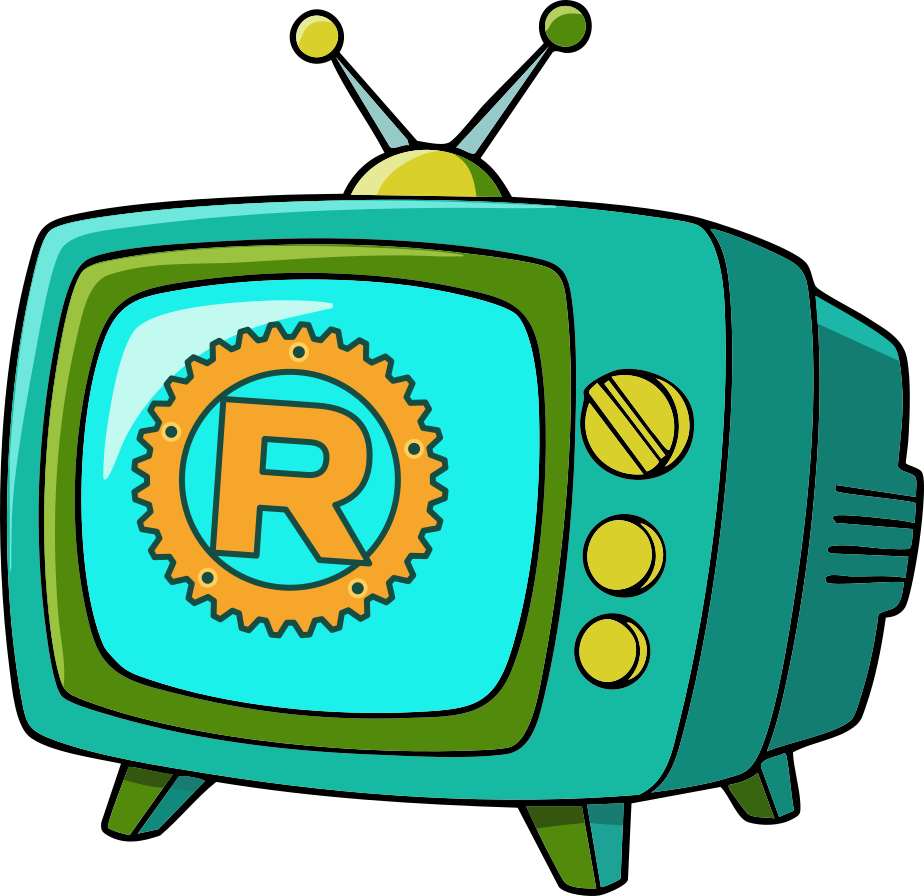

Guide index
Tonight on Northline
18:00 Evening bulletin
18:30 Coast to coast
20:15 Night signals
Mystery guest

ErsatzRSBroadcasting from the coast.
The evening ferry leaves at 21:30.
Light winds from the west.
Guide pages and source assignments are kept while the guide is off.
201 · Today — 01 Northline
202 · Today — 02 Coastline
No programme guide pages in this draft.
Evening guide is shared by two channels. Channel scope applies to page bindings.
Lua selection, editorial zones and experimental Level 2.5 resources belong to their respective editors.